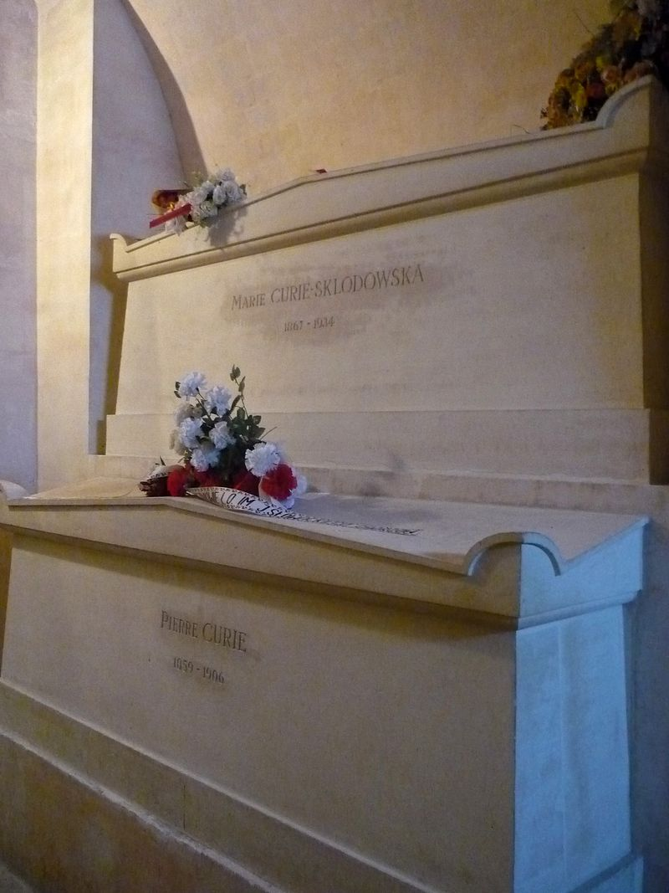
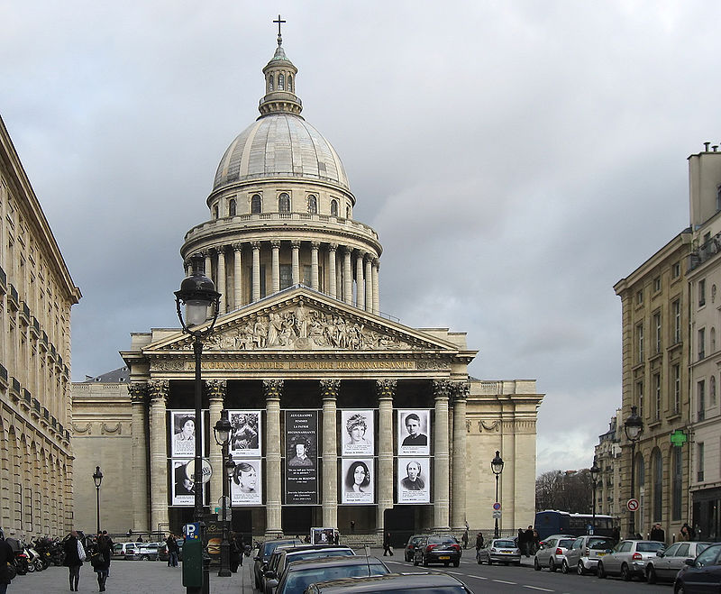
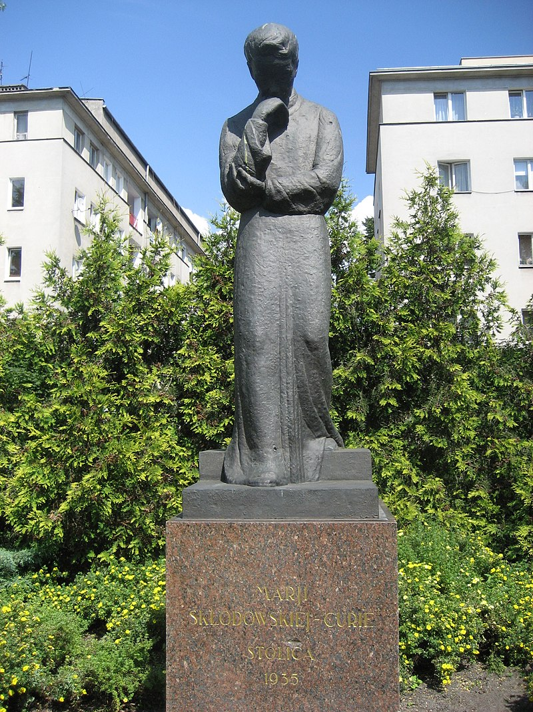
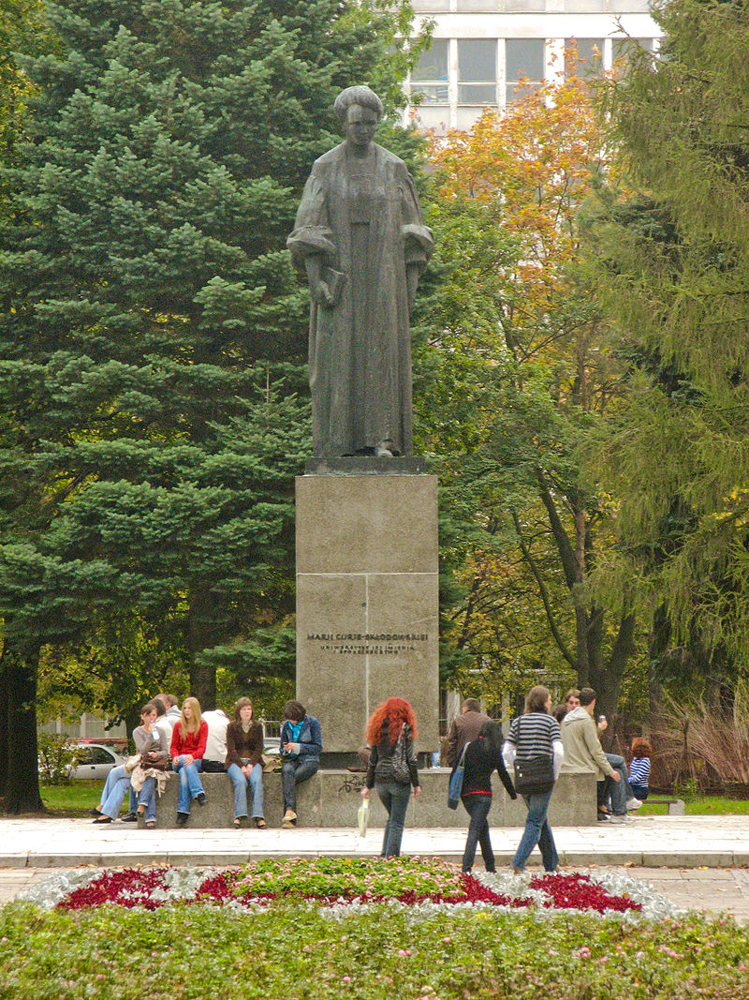
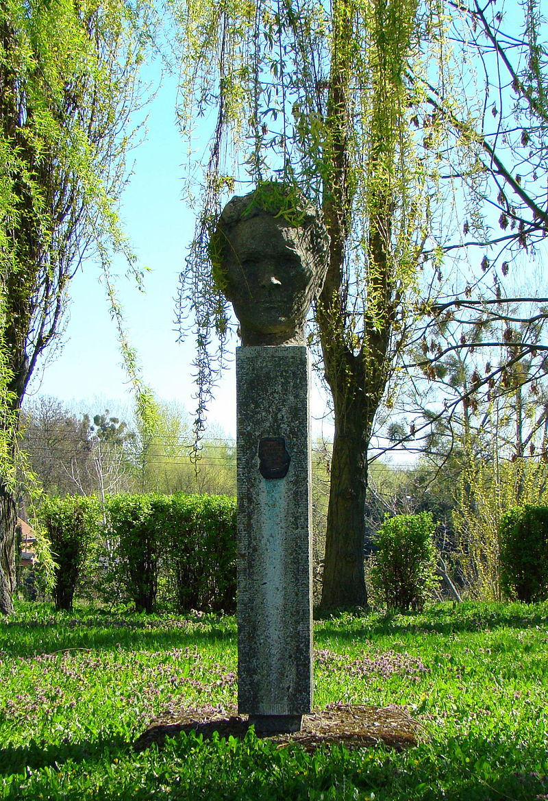
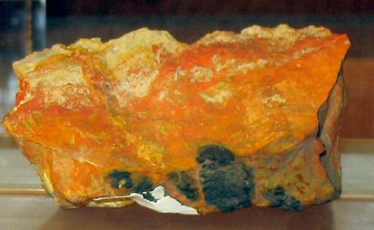
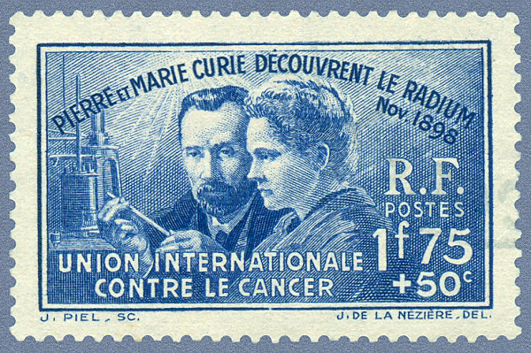
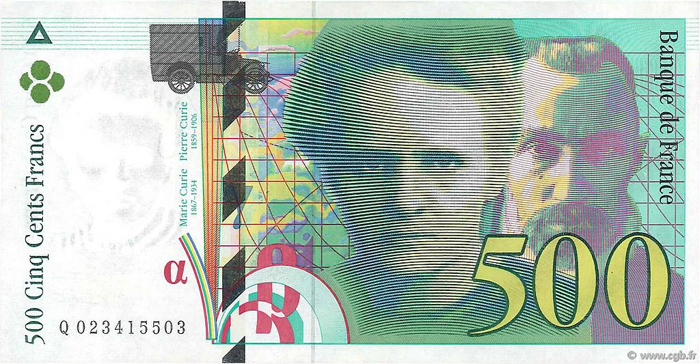
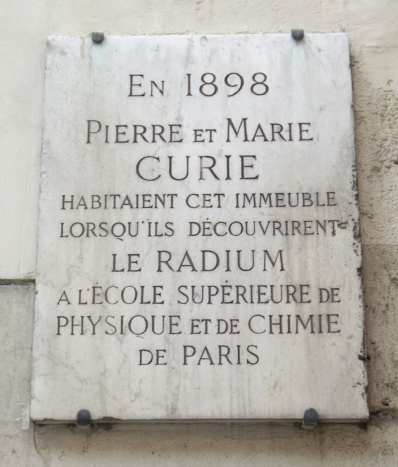
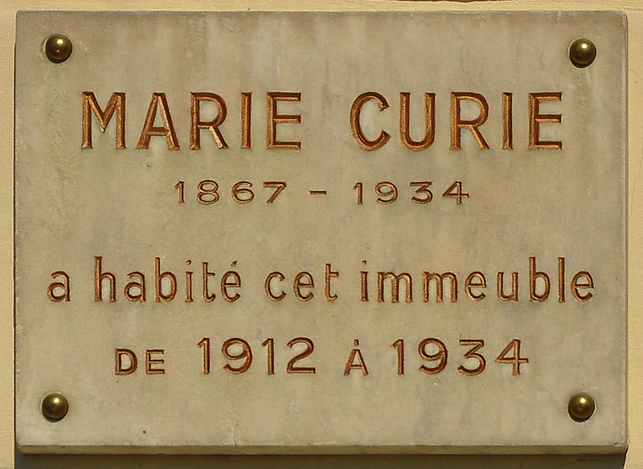

L'année 2011 a été proclamée « année Marie Curie » et Année internationale de la chimie par l’Assemblée générale des Nations unies pour célébrer le 100e anniversaire de son prix Nobel de chimie.
Distinctions
Prix Nobel de physique (1903), aux côtés de son époux — prix partagé avec Henri Becquerel ;
Prix Nobel de chimie (1911), à titre individuel pour ses travaux sur le polonium et le radium ;
Avec son époux Pierre Curie, elle refuse la Légion d'honneur. Pierre Curie déclarera : « Je n'en vois pas la nécessité ». Selon Ève Curie, Marie aurait accepté si elle lui avait été donnée pour « fait de guerre » à la suite de la mise en place des « petites Curies ».
Au Panthéon
D'abord inhumée à Sceaux dans le caveau de la famille Curie, ses restes ont été transférés avec ceux de son mari Pierre Curie dans le caveau VIII du Panthéon à Paris le 20 avril 1995, sur décision du président François Mitterrand et en présence du président polonais Lech Wałęsa. Elle est, jusqu'en 2014, la seule femme honorée au Panthéon pour son mérite propre. Conséquence de ses travaux sur les éléments radioactifs, son corps momifié est placé dans un cercueil contenant une couche de plomb.
Musées Curie

Paris : au sein de l’institut Curie à Paris, un musée Curie a été édifié dans les locaux mêmes de l'ancien Institut du Radium où la scientifique travailla jusqu'à sa mort. Entièrement gratuit, il propose au public de découvrir un riche patrimoine scientifique et retrace, à travers les parcours personnel et professionnel de la famille aux cinq prix Nobel, les grandes étapes de l'histoire de la radioactivité et de la lutte contre le cancer.
Varsovie : situé ulica Freta.
Universités, hôpitaux, enseignements
L'institut central national polonais de cancérologie nommé Centrum Onkologii – Instytut im. Marii Skłodowskiej-Curie à Varsovie (Centre d'Oncologie-Institut Marie Sklodowska-Curie).
L'hôpital de Soissons dans l'Aisne porte le nom de Marie Sklodowska-Curie.
L'université Paris 6, en France, porte le nom d’université Pierre-et-Marie-Curie.
L’université publique de Lublin, en Pologne, porte le nom d'Université Maria Curie-Skłodowska. Uniwersytet Marii Curie-Skłodowskiej w Lublinie.
À Poitiers, une cité universitaire porte son nom, près d'une rue qui porte également son nom.
La Marie Curie Fellowship Association est un programme d’aide à la mobilité géographique pour les jeunes chercheurs européens.
En 2015, Marie Curie est le douzième personnage le plus célébré au fronton des 67 000 établissements publics français : pas moins de 360 écoles, collèges et lycées ont pris son nom, derrière Joseph (880), Jules Ferry (642), Notre-Dame (546), Jacques Prévert (472), Jean Moulin (434), Jean Jaurès (429), Jeanne d'Arc (423), Antoine de Saint-Exupéry (418), Sainte Marie (377), Victor Hugo (365), Louis Pasteur (361), mais devant Pierre Curie (357), Jean de la Fontaine (335). Des lycées français portent le nom de Marie Curie à Échirolles, Marseille, Nogent-sur-Oise, Sceaux, Strasbourg (qui a créé Schulradio « Marie Curie »), Tarbes, Versailles, Menton (Alpes Maritimes), Vire (Calvados) et Saint-Benoît (La Réunion). Des écoles et collèges français portent le nom de Marie Curie notamment à Bernay (Eure), à Désertines (Allier), à Étampes, à Fontoy (Moselle), à La Seyne-sur-Mer, aux Lilas (Seine-Saint-Denis), à Lunel (Hérault), à Paris (18e), à Pignan (Hérault), à Provins, à Rion-des-Landes, à Saint-Amand-les-Eaux, à Saint-Laurent-Nouan (Loir-et-Cher), à Tourcoing, à Tournon-sur-Rhône (Ardèche), à Troyes, etc.
Des lycées polonais portent le nom de Marie Curie (Liceum ogólnokształcące im. Marii Skłodowskiej-Curie) notamment à Varsovie (XXIII Liceum ogólnokształcące), à Katowice (VIII Liceum ogólnokształcące), à Gorzów Wielkopolski (II Liceum ogólnokształcące), à Czechowice-Dziedzice (seul lycée), Andrychów (seul lycée), etc.
Une plaque à son nom est apposée à côté de l'entrée de l'ESPCI, rue Vauquelin, où était situé le laboratoire dans lequel furent isolés le radium et le polonium.
Le collège français de Montréal a nommé un de ses bâtiments Pavillon Marie-Curie, plus précisément le pavillon des sciences.
L'Institut national des sciences appliquées (INSA) de Lyon fusionne en novembre 2009 ses deux principales bibliothèques sous le nom Bibliothèque Marie Curie, inaugurée en avril 2010.
Les promotions 2011-2012 de l'École nationale d'administration et du Collège d'Europe portent le nom de Marie Curie.
L’amphithéâtre de 1000 places du Pôle de Formation sur la Recherche et la Santé (PFRS) de Caen, porte le nom de Marie Curie.
L'Hôpital civil Marie Curie - Lodelinsart
Monuments



Monument à l'université Marie Curie-Skłodowska de Lublin en Pologne
Autre monument dans la vieille ville de Police en Pologne
Autres hommages
Sciences
L’élément atomique n°96, découvert en 1944, a été baptisé curium en l’honneur de Pierre et Marie Curie.
L'astéroïde (7000) Curie, découvert en 1939, a été baptisé en son honneur.
L'UAI a donné le nom de Sklodowska à un cratère lunaire en 1961, et à un cratère martien en 1973.
La sklodowskite, la curite et la cuprosklodowskite sont des minéraux fortement radioactifs du groupe des silicates.


Timbres
En 1931, un timbre l'associant avec son mari pour l'Union internationale contre le cancer est dessiné par Joseph de La Nézière pour l'administration postale française et décliné dans les différents territoires et colonies de l'époque.
En 1967, un timbre est émis pour commémorer le centenaire de sa naissance.
En 2011, une photo la représentant au travail illustre un timbre émis pour l'année internationale de la Chimie.
D'autres pays, comme la Pologne, l'Allemagne (ancienne DDR), la Russie, l'Espagne et Cuba ont aussi émis des timbres en son honneur.
Émissions monétaires

Un billet de 500 francs français a été émis à l'effigie de Marie et Pierre Curie.
Un billet de 20 000 złotys polonais a été émis à l’effigie de Marie Curie.
En 1984 trois pièces (frappe monnaie) de 100 francs à son effigie, en argent BU, argent BE et or BE, ont été frappées à l'occasion du cinquantenaire de sa mort.
En 1997 deux pièces (frappe monnaie) ont été émises à l'effigie de Marie et Pierre Curie : 100 francs argent BE et 500 francs or BE
En 2006 deux pièces (frappe médaille) de 20 euros sont sorties à son effigie, en argent BE et en or BE.

Rues, station de métro...
Rues Marie-Curie dans de très nombreuses villes, par exemple la rue Pierre-et-Marie-Curie à Paris (en 2017, le nom fait partie des 200 les plus rencontrés en odonymie française).
Plaques commémoratives à Paris, apposées au 24 rue de la Glacière (13e arrondissement) et 36 quai de Béthune (4e arrondissement).
Le 8 mars 2007, la station du métro parisien (située à Ivry) Pierre Curie a été rebaptisée Pierre et Marie Curie.
Salle Maria Skłodowska-Curie au quatrième étage du Palais de la culture et de la science de Varsovie.
Rue Mme Curie située dans le quartier d’Hamra, à Beyrouth, au Liban.
Avenue Pierre-et-Marie-Curie à Ixelles, en Belgique (région de Bruxelles-Capitale).
Square Marie-Curie à Paris, dans le 13e arrondissement.
Le collège Pierre-et-Marie-Curie, à Gravelines.
Philatélie

Un timbre-poste a été émis en 1938 (catalogue Yvert-Tellier no 402), à l'occasion des 40 ans de la découverte du radium par Pierre et Marie Curie.
Un timbre-poste a été émis en 1967 (catalogue Yvert-Tellier n° 1533), pour le centenaire de la naissance de Marie Curie.
Un timbre-poste a été émis en 1998 (catalogue Yvert-Tellier n°3210), pour le centenaire de la découverte du radium.
Deux timbres-poste ont été émis le 27 janvier 2011 (catalogue Yvert-Tellier : en feuille n°4532 et auto-adhésif no 524) pour inaugurer l'Année Internationale de la Chimie et célébrer le deuxième prix Nobel de Marie Curie.
Deux collectors (carnets de 10 timbres tarif Lettre prioritaire et tarif Lettre verte) de MonTimbre@Moi (timbre personnalisé) ont été émis le 8 mars 2013 par le musée Curie (1 rue Pierre-et-Marie-Curie à Paris 5e) pour la Journée Internationale de la Femme. Ils représentent Marie en 1913 (centenaire de la photo servant de visuel).
Autres
Le titre Radioactivity (1975) du groupe allemand Kraftwerk rend hommage à Marie Curie.
Extrait des paroles : « Radioactivity is in the air for you and me, Radioactivity, Discovered by Madame Curie… »
Elle est le personnage principal de La Mort de Pierre Curie, roman historique de Jacques Neirynck publié en 2007.
Rosa Montero (trad. Myriam Chirousse), L'idée ridicule de ne plus jamais te revoir [« La ridícula idea de no volver a verte »], Paris, Éditions Métailie, coll. « Bibliothèque hispanique », 2015, 177 p. (ISBN 979-1-022-60164-1, OCLC 908463690)
Irène Frain, Marie Curie prend un amant, Paris, Éditions du Seuil, 2015, 357 p. (ISBN 978-2-021-18306-1 et 2-021-18306-8, OCLC 925417170)